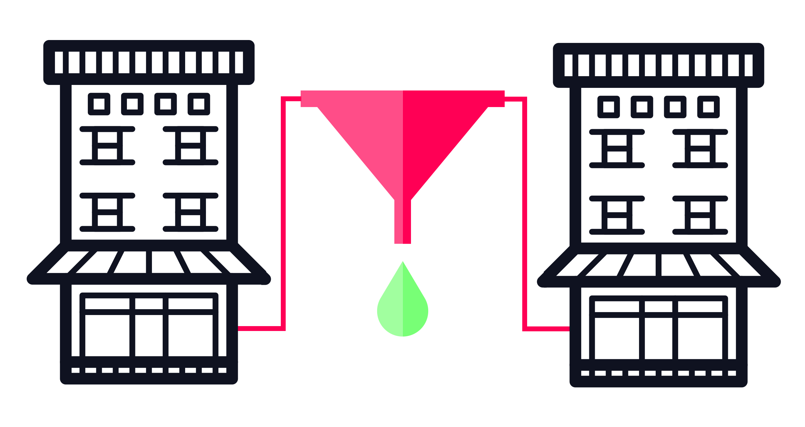
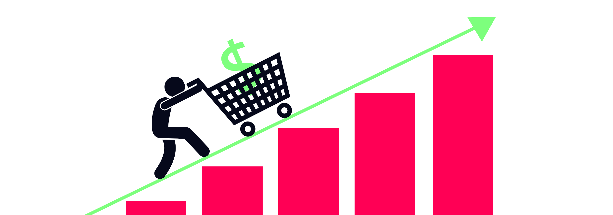
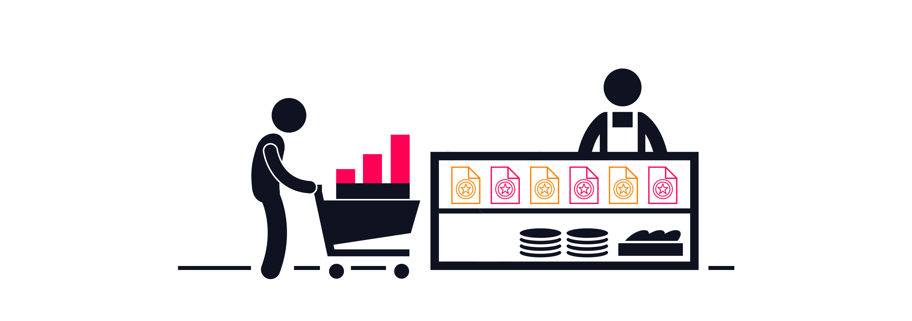

Why Cost per Acquisition Is Your Key to Growth Control - The Power of Efficiency
In the ever-evolving landscape of paid digital marketing, metrics abound. Click-through rates, impressions, conversion rates - each offers a glimpse into your campaign's performance. But when it comes to gaining full control over your growth strategy, one metric rises above the rest: Cost per Acquisition (CPA). Let's delve into why efficiency, as measured by CPA, is the linchpin of successful paid digital marketing and the gateway to unlocking your growth potential.
Read More →
How A Lack of Cash Can Stunt Your Business
Many businesses fail every year, and the majority of them fail due to poor cash flow. The reason is simple: They can’t pay their bills, their employees, or their suppliers. They can’t hire new talent, and they can’t keep their clients.
Read More →
Why Cash Is King In Growing Your Business
We know that cash isn’t everything, but it is a lot. Without it, doing business becomes a lot harder, especially when using growth marketing. Without cash, marketing becomes near impossible.
Read More →
Why Finance Should Be the Heart of Every Business
Putting finance at the heart of the business allows you to connect all the dots, have the business work in harmony, grow faster, and substantially reduce setbacks. By analyzing the data provided by all the departments, finance can design a master template, a master data budget, or a growth plan to make the right decisions that can help you effectively grow the business.
Read More →
How to scale your business with growth modelling
Read More →
The benefits of data driven growth modelling
Growth modelling is at the core of what we do at Ladder, both on the client side and internally. It lets us predict outcomes with accuracy, which allows for greater control of our investments, and can be applied to any business to achieve remarkable benefits.
Read More →
What Is Event Tracking And How To Set It Up: A Full Guide
In this guide, you’ll learn how to write your own event tracking implementation plan. Yes, actually write the code and instructions that you can pass on to your developer to implement or even implement yourself.
Read More →
17 Ways To Increase App Engagement and User Retention
How can you improve app retention and engagement? We're cracking open the secret.
Read More →
4 Useful Sales Follow-Up Email Templates For Objection Handling
The sales follow-up email templates below are provided by Katrina Duck – and expert marketing advisor with many years of branding and digital experien...
Read More →
Account-Based Marketing: 5 Tactics Every B2B Marketer Should Know
These account-based marketing tactics are a guest post by Marcus Svensson, a Growth Hacker at Albacross – a platform that shows yo...
Read More →![232% Increase in eCommerce Revenue via the Ladder Growth Testing Process [Case Study]](../6098e41066be8b2b7cb437cd/60f02ed9056e31020d5635d7_201808_LADDER_Blog_Floyd.png)
232% Increase in eCommerce Revenue via the Ladder Growth Testing Process [Case Study]
A global trendsetter in modern home furniture hired Ladder to take their eCommerce growth to the next level. Started by two friends in Detroit, Michig...
Read More →
Retargeting Ads: What They Are — And 12 Brilliant Ways to Use Them
Done right, retargeting ads are an effective method of re-engaging inactive users, upselling current customers, and converting website visitors into p...
Read More →
10 B2B Marketing Tactics Guaranteed to Increase ROI
B2B marketing is a marketing practice of selling to other businesses. However, it isn’t nearly as straightforward as targeting consumers.
You have to ...
Read More →
Marketing Funnel Growth Guide 2019: Analysis, Strategies, Tactics, and Tools
Businesses can only survive for so long with an uncoordinated marketing strategy. “Growth hacks” aren’t sustainable. And while they may yield some fru...
Read More →
8 advanced remarketing strategies to triple your ROI
Imagine yourself being at a party. Would you connect easier and engage better with a group of people you already know or with a bunch of strangers?
Mo...
Read More →
14 eCommerce Marketing Tactics to Increase Sales Revenue (Part 1)
This is Part 1 of our 2-part eCommerce growth series — a list of high-value, high-ROI tactics as chosen by Ladder’s strategists. Based on our strategi...
Read More →7 More Revenue-Driving eCommerce Growth Tactics
Welcome to Part 2 of Ladder’s go-to eCommerce growth tactics, as chosen by our strategists. In Part 1, we kicked off with 7 tactics as chosen by four ...
Read More →
6 Essential Marketing Tactics to Grow Your eCommerce Store
Welcome to Part 2 of the eCommerce Stack — tech and marketing strategies that will help you grow your eCommerce store.
For Part 1, check out the eComm...
Read More →